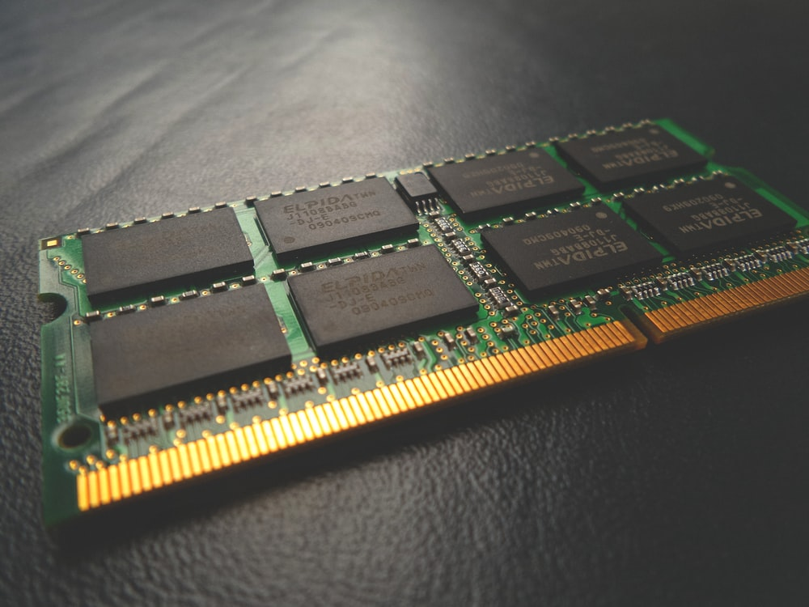
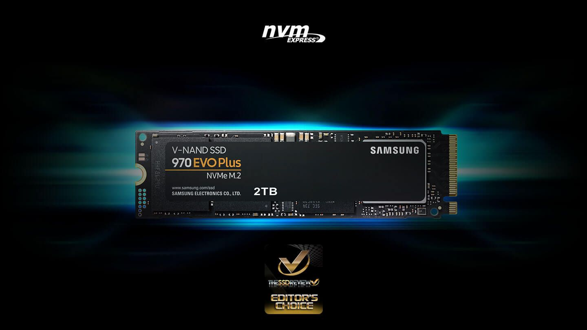
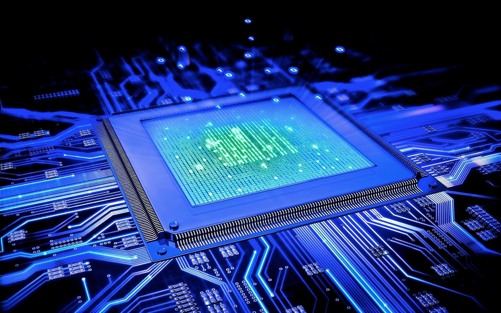
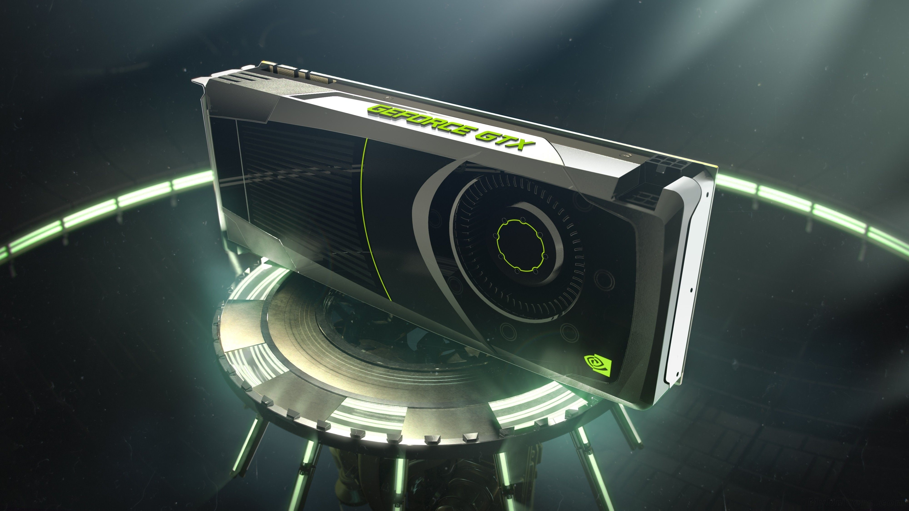

For the best exoerience, gaming requires you to focus your budget more on other components than other computing tasks that a PC does, and in this blog post, we will be looking into what components will give you the most fps in your games.
1. RAM
Your RAM modules are what store important data that your CPU needs access to, and these data should be fed to the CPU as fast as possible to keep your CPU as busy as possible. Having enough RAM (above 4GB) is essential in avoiding the stuttering effects that happen when your fps drops suddenly in game and in keepng your gaming experience as smooth and consistent as possible. For AMD based PC builds, your RAM speed is also very important, as Ryzen CPUs perform much better with faster RAM.
2. Storage
Though it does not affect your PC's performance for gaming, having fast storage can significantly cut down the loading time of your games, especially for large and demanding triple-a games such as GTA V, recent Assassin's Creed games, and many others.
3. CPU
Your CPU processes a lot of things in games, thus it is essential that you have a fast CPU for gaming. Some games demand more CPU cores, while others demand faster CPU clock speeds. Having more than 4 cores can have diminishing returns on games however, since almost all games at this point do not need more than 4 cores, so focusing on clock speed will do you more good.
4. GPU
The most important component for imporving your PC's gaming performance is the GPU. Your GPU handles the processing and rendering of graphical stuff such as textures, character models, 3D graphics, and many others. Choosing your GPU is very important, because not choosing the right one can be the difference between being able to play a certain game or not.
first user
Hello this is my comment